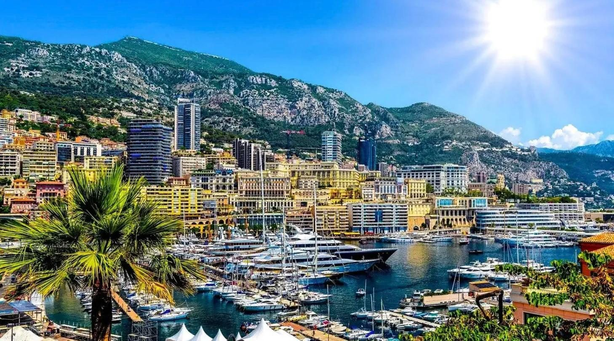
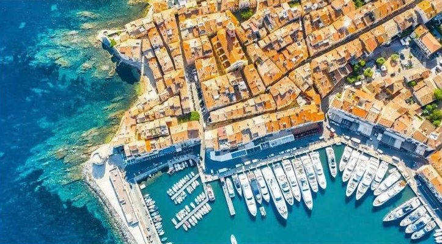
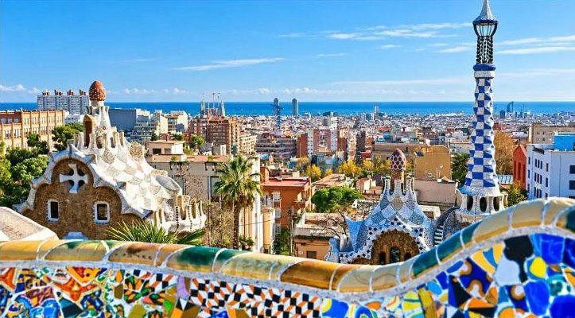
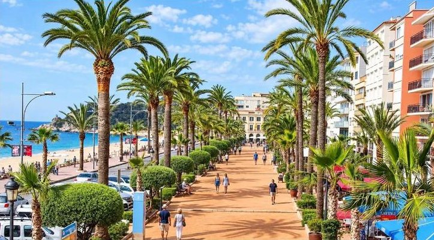
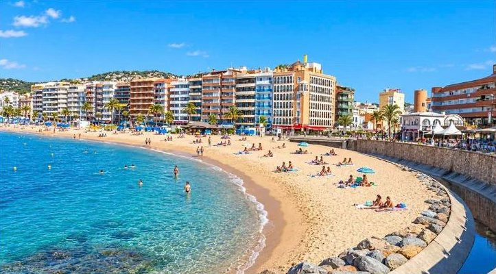

dzień1
Wyjazd z Polski
📍 Katowice → Czechy → Austria → Włochy
Wyjazd z miejsca zbiórki (np. z Gliwic o 11:00). Jazda przez noc w stronę Francji.

Lazurowe Wybrzeże, Barcelona i Morze Śródziemne w tydzień
Kolejność zwiedzania może się nieco zmienić — o szczegółach decyduje pilot na miejscu.
📍 Katowice → Czechy → Austria → Włochy
Wyjazd z miejsca zbiórki (np. z Gliwic o 11:00). Jazda przez noc w stronę Francji.
📍 Księstwo Monako
Jedno z najmniejszych i najbogatszych państw Europy. Spacer po starym mieście: Pałac Książęcy i katedra z grobem księżnej Grace Kelly. Można zajrzeć do słynnego Oceanarium. Potem Monte Carlo — eleganckie hotele, kasyno i trasa wyścigu Formuły 1. W Monako spędza się ok. 8–9 godzin.

📍 Lazurowe Wybrzeże → Lloret de Mar
Wczesne śniadanie. Cannes: promenada La Croisette, Pałac Festiwalowy i Stary Port. Potem Saint-Tropez — uliczki prowansalskiego miasteczka i port pełen jachtów. Po południu przejazd do Hiszpanii, do Lloret de Mar.
🚌 późna obiadokolacja w hotelu

📍 Barcelona
Wzgórze Montjuïc z panoramą miasta i portu, Sagrada Família, Plac Kataloński i spacer deptakiem La Rambla do pomnika Kolumba i starego portu. Potem Dzielnica Gotycka i czas wolny. Na koniec okolice stadionu FC Barcelona.

📍 Lloret de Mar · Montserrat
Dzień na odpoczynek i plażę w Lloret de Mar.

📍 Lloret de Mar → Polska
Wymeldowanie, czas wolny na spacer, zakupy albo plażę. Potem wyjazd w drogę powrotną.
📍 Katowice
Przyjazd po południu.
Wyjazd autokarem z Katowic (albo z Gliwic, Krakowa, Jastrzębia-Zdroju — ta sama cena). Cena jest za jedną osobę, gdy w pokoju są 2 osoby (urlop.pl podaje cenę za dwie: 4 998 zł).
| Cena wycieczki (najtańszy termin) | 2 499 zł |
| Obowiązkowo u pilota w autokarze: bilety, rejs w Saint-Tropez, przewodnicy, wjazdy | 150 € ≈ 638 zł |
Euro przeliczone orientacyjnie po ok. 4,25 zł. Bez wycieczek dla chętnych (Montserrat, rejs do Tossa de Mar). Dla 2 osób: ok. 6 300 zł.
Wycieczkę organizuje biuro Selva Tour. Ceny sprawdziłem w porównywarce urlop.pl, która ją sprzedaje — infolinia urlop.pl:
22 451 00 00
📞 Zadzwoń Zobacz ofertę na urlop.pl ↗